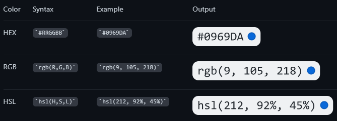
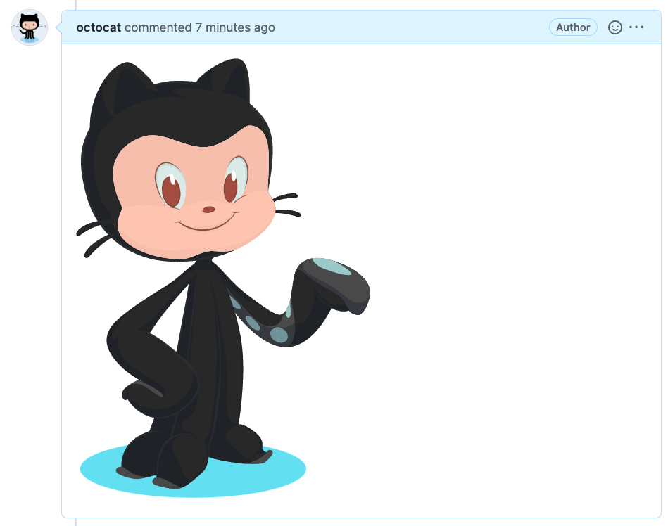
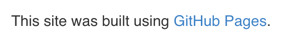
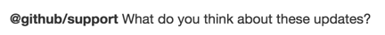
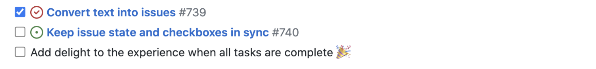

github flavored markdown
Overview
GitHub-Flavored Markdown is an extended markdown syntax by GitHub.
Collapsible Sections
<details><summary>CLICK ME</summary>
<p>
#### We can hide anything, even code!
```ruby
puts "Hello World"
\```
</p>
</details>
CLICK ME
We can hide anything, even code!
puts "Hello World"
Code Blocks
See also: linguist/languages.yml at master · github/linguist
```
function test() {
console.log("notice the blank line before this function?");
}
```
Syntax Highlighting
```ruby
require 'redcarpet'
markdown = Redcarpet.new("Hello World!")
puts markdown.to_html
```
Color Models

Comments
<!-- This content will not appear in the rendered Markdown -->
Diagrams
Mermaid
Here is a simple flow chart:
```mermaid
graph TD;
A-->B;
A-->C;
B-->D;
C-->D;
```

Math
Delimit expressions with $:
This sentence uses `$` delimiters to show math inline: $\sqrt{3x-1}+(1+x)^2$

Math Expressions as Blocks
Use a math code block:
**Here is some math!**
```math
\sqrt{3}
```
Emoji
@octocat :+1: This PR looks great - it's ready to merge! :shipit:

Escaping
Use \:
Let's rename \*our-new-project\* to \*our-old-project\*.
To escape a nested code block, the outer code block needs a different number of backticks than the inner.
Footnotes
Here is a simple footnote[^1].
A footnote can also have multiple lines[^2].
You can also use words, to fit your writing style more closely[^note].
[^1]: My reference.
[^2]: Every new line should be prefixed with 2 spaces.
This allows you to have a footnote with multiple lines.
[^note]:
Named footnotes will still render with numbers instead of the text but allow easier identification and linking.
This footnote also has been made with a different syntax using 4 spaces for new lines.

Headings
# The largest heading
## The second largest heading
###### The smallest heading
Horizontal Line
___ (3 or more underscores)
Images


Keyboard Shortcuts
<kbd>Ctrl</kbd> + <kbd>Alt</kbd> + <kbd>Space</kbd>
Ctrl + Alt + Space
Links
This site was built using [GitHub Pages](https://pages.github.com/).

Or, links at the end of the file:
This site was built using [GitHub Pages][github-pages].
[github-pages]: https://pages.github.com/
Relative Links
[Contribution guidelines for this project](docs/CONTRIBUTING.md)
Linking Issues & Pull Requests
| Reference type | Raw reference | Short link |
|---|---|---|
| Issue or pull request URL | https://github.com/jlord/sheetsee.js/issues/26 | #26 |
| and issue or pull request number | #26 | #26 |
| GH- and issue or pull request number | GH-26 | GH-26 |
| Username/Repository# and issue or pull request number | jlord/sheetsee.js#26 | jlord/sheetsee.js#26 |
| Organization_name/Repository# and issue or pull request number | github/linguist#4039 | github/linguist#4039 |
| Commit URL | https://github.com/jlord/sheetsee.js/commit/a5c3785ed8d6a35868bc169f07e40e889087fd2e | a5c3785 |
| SHA | a5c3785ed8d6a35868bc169f07e40e889087fd2e | a5c3785 |
| User@SHA | jlord@a5c3785ed8d6a35868bc169f07e40e889087fd2e | jlord@a5c3785 |
| Username/Repository@SHA | jlord/sheetsee.js@a5c3785ed8d6a35868bc169f07e40e889087fd2e | jlord/sheetsee.js@a5c3785 |
Lists
Unordered
- George Washington
* John Adams
+ Thomas Jefferson
- George Washington
- John Adams
- Thomas Jefferson
Ordered
1. James Madison
2. James Monroe
3. John Quincy Adams
- James Madison
- James Monroe
- John Quincy Adams
Nested
The list marker character must lie directly below the first character of the text in the item above it:
1. First list item
- First nested list item
- Second nested list item
- First list item
- First nested list item
- Second nested list item
- First nested list item
Mentions
@github/support What do you think about these updates?

Quoting Text
> Quoted text
Quoted text
Table of Contents
GitHub generates a ToC when 2+ headings are added:

Tables
Tables require a blank line before they start:
| Command | Description |
| ---------- | ---------------------------------------------- |
| git status | List all new or modified files |
| git diff | Show file differences that haven't been staged |
| Command | Description |
|---|---|
| git status | List all new or modified files |
| git diff | Show file differences that haven’t been staged |
Task Lists
- [x] #739
- [ ] https://github.com/octo-org/octo-repo/issues/740
- [ ] Add delight to the experience when all tasks are complete :tada:

Text Styling
| Style | Syntax | Output |
|---|---|---|
| Bold | ** ** or __ __ | This is bold text |
| Italic | * * or _ _ | This text is italicized |
| Strikethrough | ~~ ~~ | This was mistaken text |
| Bold and nested italic | ** ** and _ _ | This text is extremely important |
| All bold and italic | *** *** |
All this text is important |
| Subscript | <sub> </sub> |
This is a subscript text |
| Superscript | <sup> </sup> |
This is a superscript text |